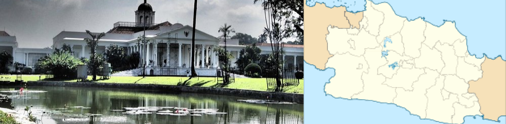
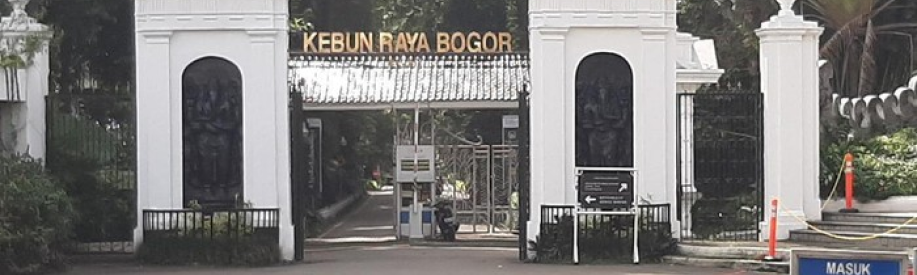
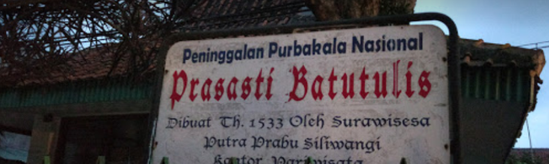
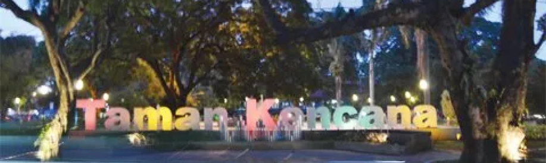

Tentang

Bogor adalah sebuah kota yang terletak di provinsi Jawa Barat,
Indonesia. Kota ini terletak 59 km di sebelah selatan Jakarta, dan
merupakan enklave Kabupaten Bogor. Pada pertengahan tahun 2022,
jumlah penduduk kota Bogor sebanyak 1.099.422 jiwa, dengan kepadatan
9.278 jiwa/km².[2]
Bogor dikenal dengan julukan Kota Hujan, karena memiliki curah hujan
yang lumayan sangat tinggi. Kota Bogor terdiri atas 6 kecamatan yang
dibagi lagi atas sejumlah 68 kelurahan. Pada masa Kolonial Belanda,
Bogor dikenal dengan nama Buitenzorg yang berarti tanpa kecemasan
atau aman tenteram.
Berita Terkini
Info Wisata
1. Kebun Raya Bogor

Kebun Raya Bogor atau Kebun Botani Bogor adalah sebuah kebun
botani besar yang terletak di Kota Bogor, Indonesia. Luasnya
mencapai 87 hektar dan memiliki 15.000 jenis koleksi pohon dan
tumbuhan.
Saat ini Kebun Raya Bogor ramai dikunjungi sebagai tempat wisata,
terutama hari Sabtu dan Minggu. Tiket masuknya Rp 30.000. Di
sekitar Kebun Raya Bogor tersebar pusat-pusat keilmuan yaitu
Herbarium Bogoriense, Museum Zoologi Bogor, dan PUSTAKA.
2. Prasasti Batu Tulis

Prasasti Batutulis terletak di Jalan Batutulis, Kelurahan
Batutulis, Kecamatan Bogor Selatan, Kota Bogor. Kompleks Prasasti
Batutulis memiliki luas 17 x 15 meter. Prasasti Batutulis dianggap
terletak di situs ibu kota Pajajaran dan masih in situ, yakni
masih terletak di lokasi aslinya dan menjadi nama desa lokasi
situs ini.[1] Batu Prasasti dan benda-benda lain peninggalan
Kerajaan Sunda terdapat dalam komplek ini. Pada batu ini berukir
kalimat-kalimat dalam bahasa Sunda Kuno dengan aksara Kawi.
Prasasti ini berangka tahun 1455 Saka (1533 Masehi).
3. Taman Kencana

Taman Kencana merupakan taman kecil di antara area hijau di Kota
Bogor yang semakin lama semakin menghilang seiring dengan kemajuan
pembangunan kota. Taman ini merupakan salah satu peninggalan zaman
Belanda. Didukung dengan suasana di sekitarnya yang masih rindang
dengan pepohonan, taman ini sekaligus menjadi tempat rekreasi dan
semacam titik pertemuan bagi sebagian masyarakat Kota Bogor dan
berbagai macam komunitas seperti komunitas penggemar binatang
peliharaan, apalagi dengan kemunculan penjual-penjual makanan
pinggiran jalan maupun outlet-outlet makanan di rumah-rumah di
sekitarnya.
Taman Kencana akan menjadi sangat ramai pada hari Minggu. Tempat
ini menjadi salah satu tujuan akhir para pelari-pagi warga Bogor
setelah lelah berolahraga mengelilingi Kebun Raya Bogor ataupun
Lapangan Sempur.